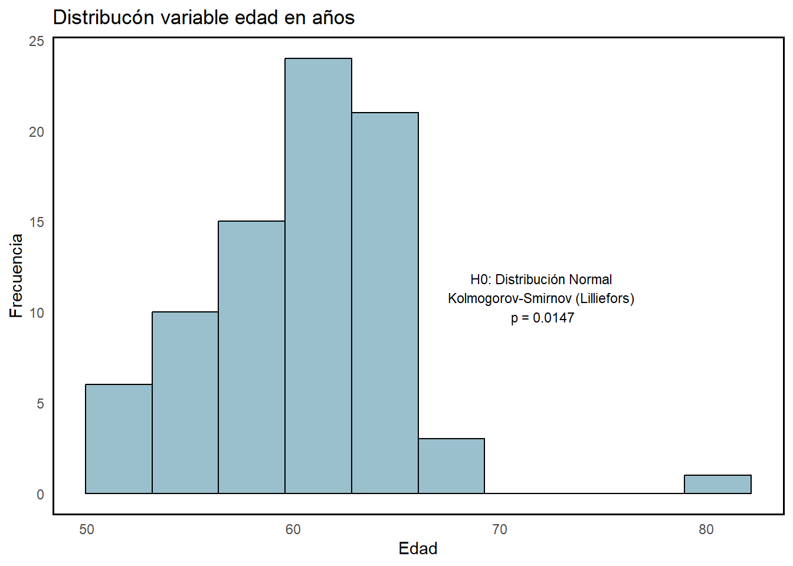
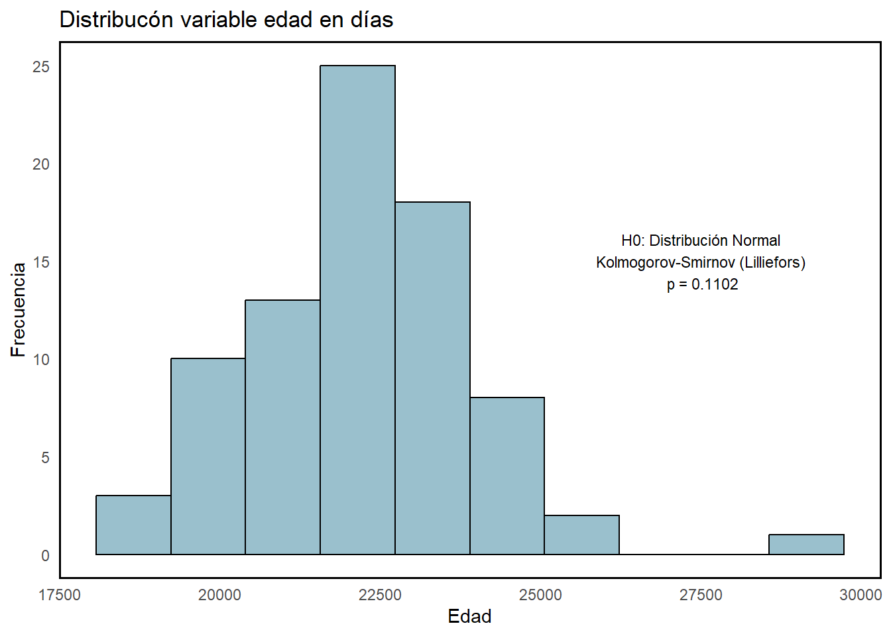

Ejercicio 0
En el fichero Datos—Tema 1—ejercicio0, aparecen las fechas de nacimiento de 80 individuos. Calcular su edad con R.
Lectura de datos.
ejercicio0 <- haven::read_sav("~/Master_Bioestadistica/Supervivencia/Tema_01/Datos Ejemplos/ejercicio0.sav")str(ejercicio0)
## tibble [80 × 2] (S3: tbl_df/tbl/data.frame)
## $ num_pac : num [1:80] 1 2 3 4 5 6 7 8 9 10 ...
## ..- attr(*, "format.spss")= chr "F8.0"
## $ fecha_na: Date[1:80], format: "1973-05-28" "1971-01-21" ...Cálculo de la variable edad en diferentes formatos.
options(tibble.width = Inf)
ejercicio0 <- ejercicio0 %>%
mutate(
edad_anyos = floor(time_length(difftime(today(), fecha_na), "years")),
edad_anyos_50 = floor(time_length(difftime(today(), fecha_na %m+% years(50)), "years")),
edad_anyos_dec = round(time_length(difftime(today(), fecha_na), "years"), 2),
edad_anyos_dec_50 = round(time_length(difftime(today(), fecha_na %m+% years(50)), "years"), 2),
edad_anyos_meses = paste(
floor(time_length(difftime(today(), fecha_na), "years")), "años y",
floor(time_length(difftime(today(), fecha_na), "months")) %% 12, "meses"
),
edad_anyos_dias = paste(
floor(time_length(difftime(today(), fecha_na), "years")), "años y",
floor(time_length(difftime(today(), fecha_na), "days")) %% 365, "días"
),
edad_dias = as.numeric(difftime(today(), fecha_na, units = "days")),
edad_dias_50 = as.numeric(difftime(today(), fecha_na %m+% years(50), units = "days"))
)
head(ejercicio0)# A tibble: 6 × 10
num_pac fecha_na edad_anyos edad_anyos_50 edad_anyos_dec edad_anyos_dec_50
<dbl> <date> <dbl> <dbl> <dbl> <dbl>
1 1 1973-05-28 51 1 51.7 1.71
2 2 1971-01-21 54 4 54.1 4.06
3 3 1970-08-02 54 4 54.5 4.53
4 4 1972-03-30 52 2 52.9 2.87
5 5 1967-03-01 57 7 58.0 7.95
6 6 1969-06-11 55 5 55.7 5.68
edad_anyos_meses edad_anyos_dias edad_dias edad_dias_50
<chr> <chr> <dbl> <dbl>
1 51 años y 8 meses 51 años y 273 días 18888 626
2 54 años y 0 meses 54 años y 36 días 19746 1483
3 54 años y 6 meses 54 años y 208 días 19918 1655
4 52 años y 10 meses 52 años y 332 días 19312 1050
5 57 años y 11 meses 57 años y 363 días 21168 2905
6 55 años y 8 meses 55 años y 260 días 20335 2073test_normalidad <- function(data, variable) {
# Comprobar que la variable exista en el dataframe
if (!variable %in% colnames(data)) {
stop("La variable no existe en el dataframe.")
}
# Obtener el tamaño de la muestra
n_muestra <- nrow(data)
# Aplicar el test de normalidad
if (n_muestra <= 50) {
test_res <- shapiro.test(data[[variable]])
test_name <- "Shapiro-Wilk"
} else {
test_res <- nortest::lillie.test(data[[variable]])
test_name <- "Kolmogorov-Smirnov (Lilliefors)"
}
# Devolver el resultado y el nombre del test
return(list(test_name = test_name,
p_value = round(test_res$p.value, 4),
result = test_res))
}Distribucón de la edad en años:
norm_result <- test_normalidad(ejercicio0, "edad_anyos")
ggplot(ejercicio0, aes(x = edad_anyos)) +
geom_histogram(bins = 10, fill = "lightblue3", color = "black") +
labs(title="Distribucón variable edad en años",
x = "Edad", y = "Frecuencia") +
theme_minimal() +
theme(panel.grid.major = element_blank(),
panel.grid.minor = element_blank(),
panel.border = element_rect(color = "black", fill = NA, linewidth = 1),
axis.line = element_blank()) +
annotate("text",
x = max(range(ejercicio0$edad_anyos)) * 0.9,
y = max(table(ejercicio0$edad_anyos)) * 0.9,
label = paste("H0: Distribución Normal\n", norm_result$test_name, "\n p =", norm_result$p_value),
size = 3, color = "black", hjust = 0.5)
Min. 1st Qu. Median Mean 3rd Qu. Max.
51.00 57.00 60.00 60.19 63.00 80.00 Distribucón de la edad en días:
norm_result <- test_normalidad(ejercicio0, "edad_dias")
ggplot(ejercicio0, aes(x = edad_dias)) +
geom_histogram(bins = 10, fill = "lightblue3", color = "black") +
labs(title="Distribucón variable edad en días",
x = "Edad", y = "Frecuencia") +
theme_minimal() +
theme(panel.grid.major = element_blank(),
panel.grid.minor = element_blank(),
panel.border = element_rect(color = "black", fill = NA, linewidth = 1),
axis.line = element_blank()) +
annotate("text",
x = max(range(ejercicio0$edad_dias)) * 0.94,
y = 15,
label = paste("H0: Distribución Normal\n", norm_result$test_name, "\n p =", norm_result$p_value),
size = 3, color = "black", hjust = 0.5)
Min. 1st Qu. Median Mean 3rd Qu. Max.
18758 21163 22236 22174 23180 29248